KoopKal: Koopman-Kalman Probabilistic Dynamics for Egocentric Hand Trajectory Forecasting
School of Control Science and Engineering, Shandong University
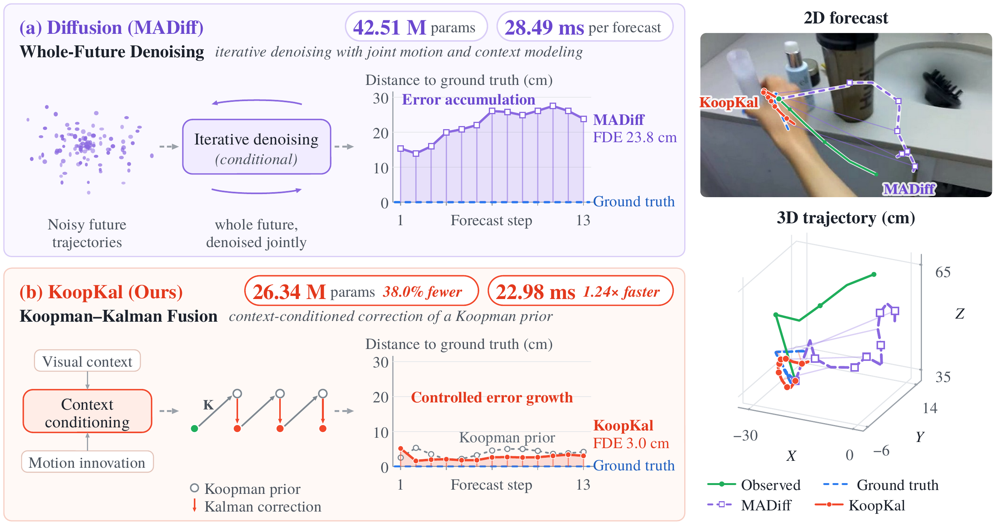
Abstract
Egocentric hand trajectory forecasting aims to predict future hand motion from an observed history of egocentric video and hand waypoints, where the observed trajectory is jointly influenced by intrinsic hand motion, human–object interactions, and camera egomotion. Recent methods have achieved promising performance by modeling observed hand motion and egocentric visual context through autoregressive trajectory forecasting or diffusion-based trajectory generation. However, these approaches typically model trajectory evolution implicitly within the single prediction process, without explicitly characterizing how the hand state propagates over time. Consequently, local prediction deviations may propagate to subsequent steps, causing errors to accumulate over long forecasting horizons and eventually leading to trajectory drift. To address this issue, we propose KoopKal for egocentric hand trajectory forecasting, a Koopman-Kalman state-space model that establishes future motion prediction upon structured Koopman latent-state evolution and recursively refines the predicted states through context-conditioned corrections within an uncertainty-aware filtering framework. Specifically, KoopKal introduces a Koopman-inspired latent transition model that captures underlying hand-motion dynamics through compact linear evolution in a lifted state space, providing a structured motion prior for globally coherent forecasting. To capture context-dependent motion variations beyond the Koopman prior, we further introduce a context-conditioned residual motion correction module to adaptively refine the prior prediction. Finally, KoopKal integrates the Koopman prior and context-conditioned corrections within a probabilistic Kalman filtering framework, enabling recursive latent-state refinement and uncertainty propagation. Extensive experiments on four public egocentric benchmarks demonstrate that KoopKal achieves superior performance compared with state-of-the-art methods across 2-D, metric 3-D, and multi-joint hand trajectory forecasting, while requiring substantially fewer parameters and enabling faster inference.
Method
KoopKal forecasts one step at a time. At every future step, the Koopman operator predicts where the hand state goes next, a contextual branch predicts how that prediction should be corrected, and a Kalman update decides how much of the correction to trust.
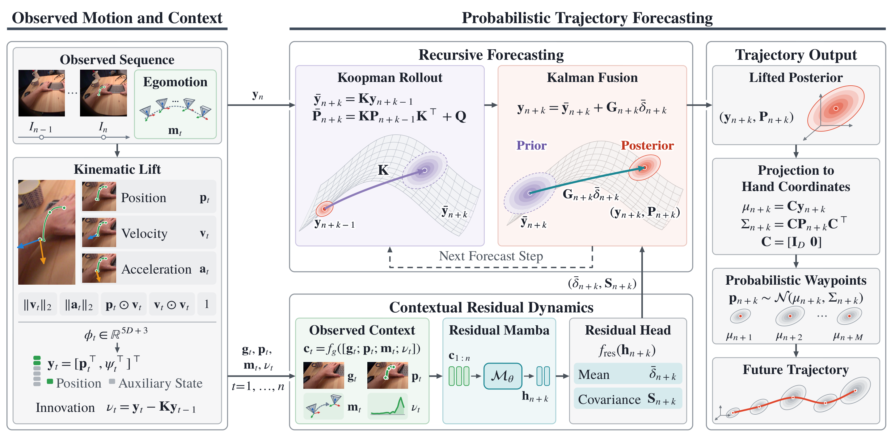
-
Position-preserving Koopman lift
Each observed waypoint is combined with its velocity, acceleration, and a few nonlinear kinematic terms, then lifted into a latent state that still contains the hand position itself. Any predicted state therefore maps straight back to 2-D or 3-D coordinates through a fixed projection, with no trajectory decoder. Comparing each observed state with its one-step Koopman prediction gives a Koopman innovation, which records how the hand departs from nominal motion.
-
Koopman prior and contextual residuals
From the last observed state, the learned Koopman operator propagates the state and its covariance step by step, giving a coherent motion prior over the whole horizon. In parallel, a Residual Mamba reads visual features, hand positions, camera egomotion, and the Koopman innovations, and predicts for every future step a correction to the prior together with its uncertainty. The branch never outputs a separate trajectory; it only says how the prior should change.
-
Uncertainty-aware Kalman fusion
A Kalman update weighs the Koopman prior against the contextual correction. A confident correction moves the state; an uncertain one is damped, and the prior dominates. The fused state is projected to a Gaussian waypoint for each future step, and an uncertainty-weighted, smoothness-regularized readout turns these waypoints into one temporally coherent trajectory.
Results
We evaluate KoopKal on four egocentric benchmarks (EgoPAT3D-DT, H2O-PT, HOT3D-Clips, and CABH), covering 2-D, metric 3-D, and five-joint hand trajectory forecasting under seen- and unseen-environment protocols. For example, in 2-D on EgoPAT3D-DT, KoopKal reaches an ADE/FDE of 0.053/0.093 on seen scenes and 0.042/0.075 on unseen scenes, compared with 0.064/0.109 and 0.052/0.087 for Uni-Hand.
2-D forecasting in egocentric video
Each animation plays the observed clip and then draws the forecasts step by step on the reference frame, with MADiff and Uni-Hand for comparison. Samples come from EgoPAT3D-DT, including one unseen scene, and H2O-PT. Click any animation to open it at full size.
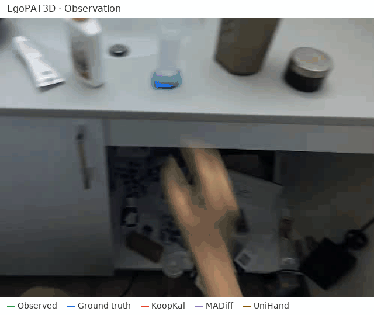
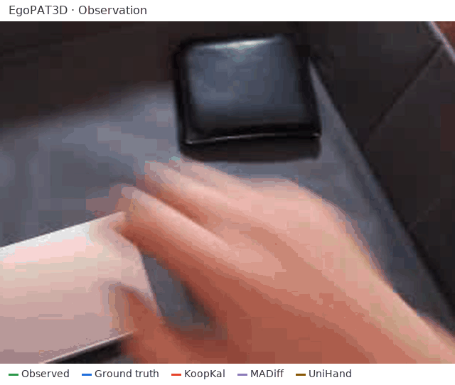
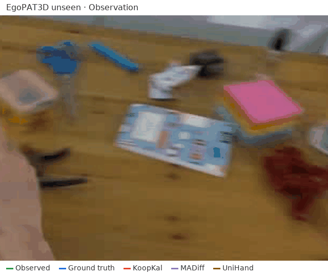
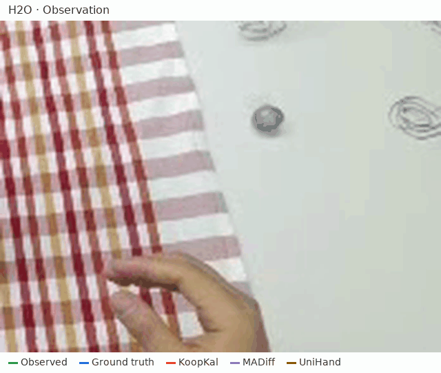
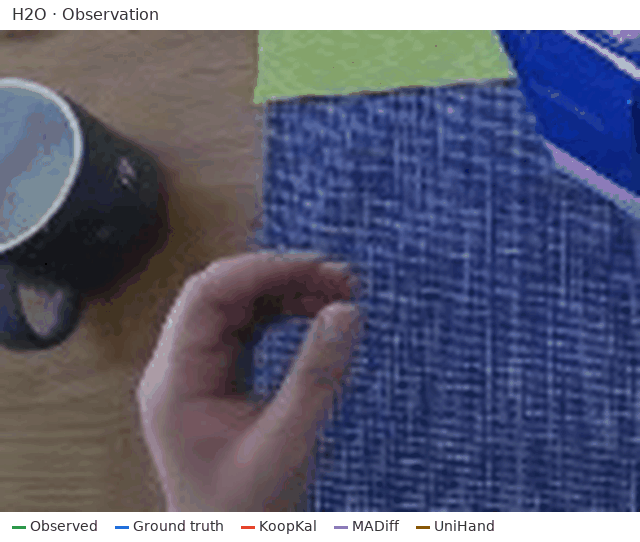
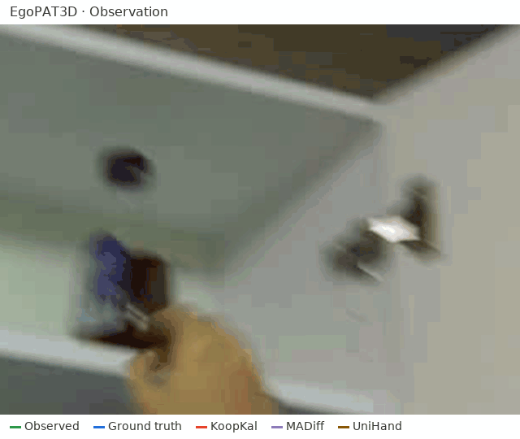
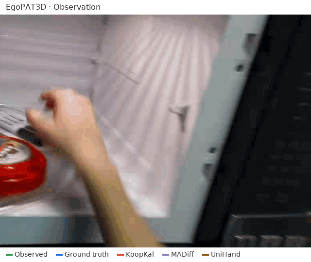
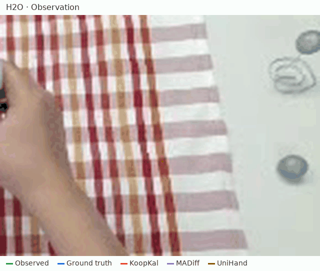
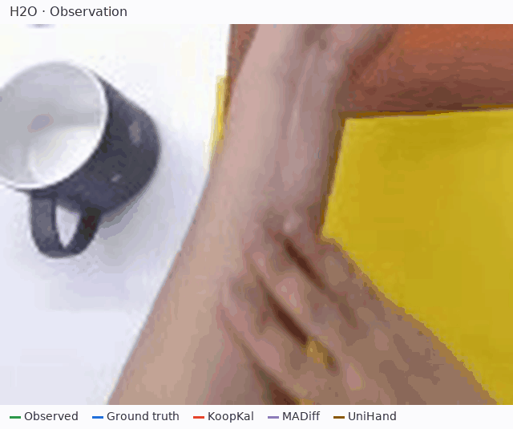
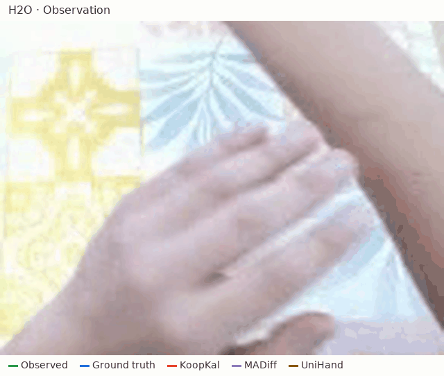
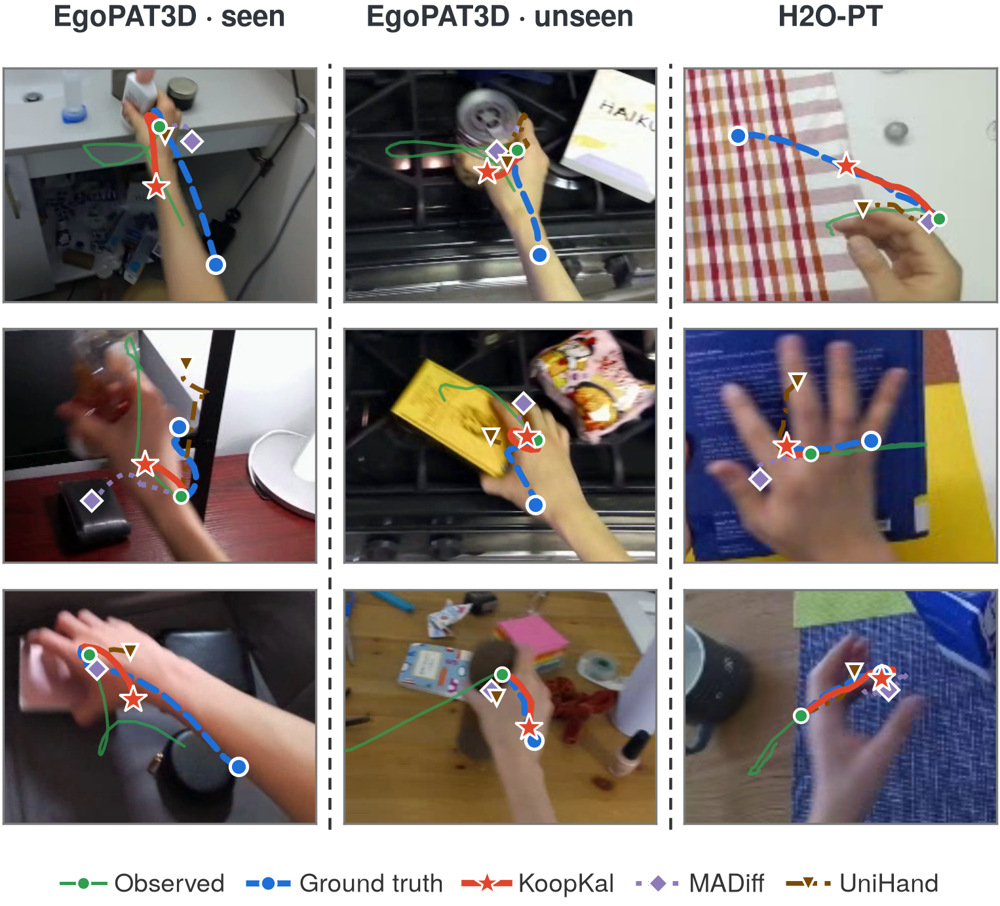
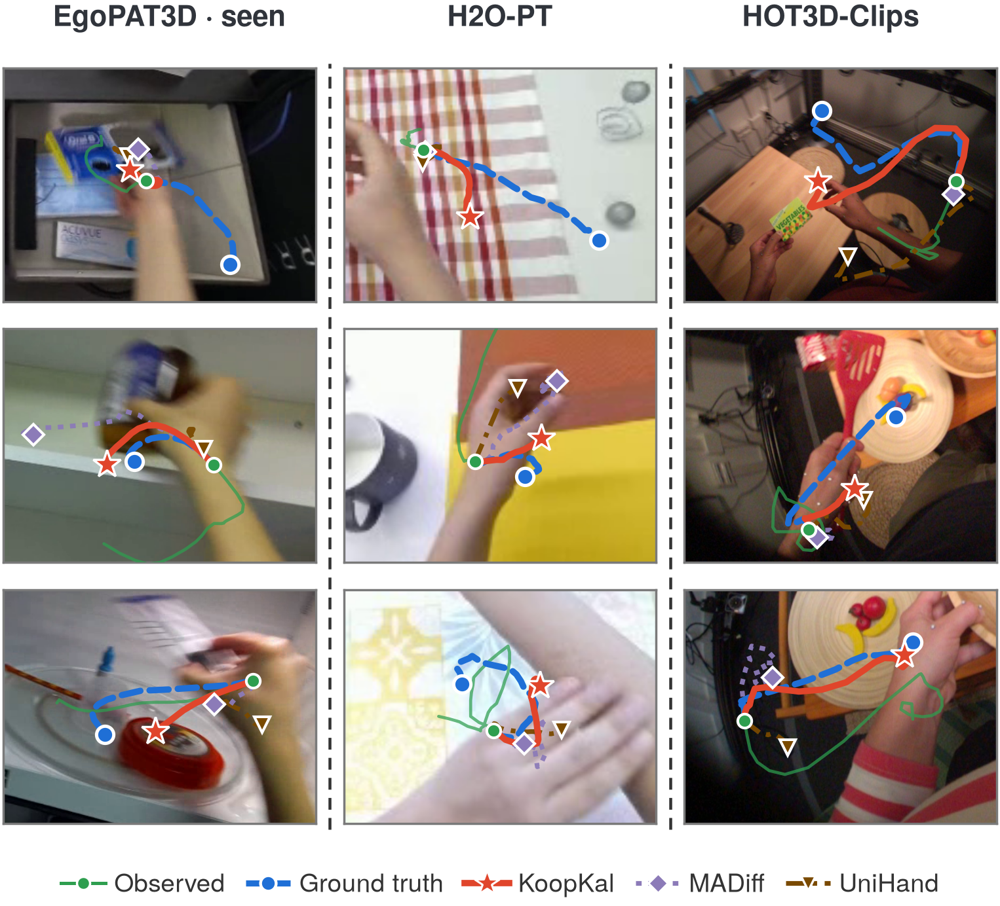
Metric 3-D forecasting
Hand-center trajectories in meters on EgoPAT3D-DT and HOT3D-Clips, plotted from a fixed viewpoint with equal axis scales. Each animation draws the observed trajectory, then the ground-truth future and the KoopKal forecast, using the paper's exported coordinates without interpolation.
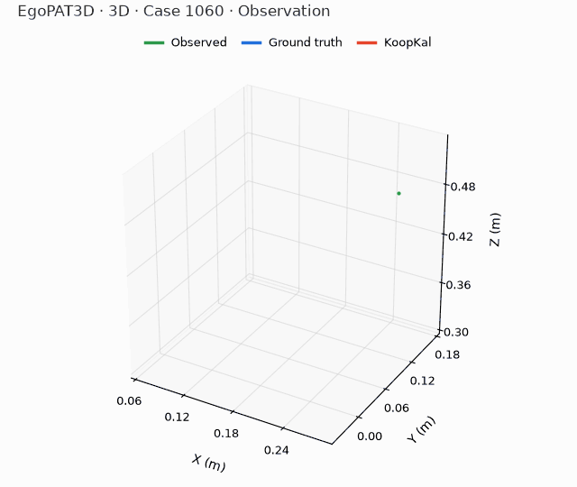
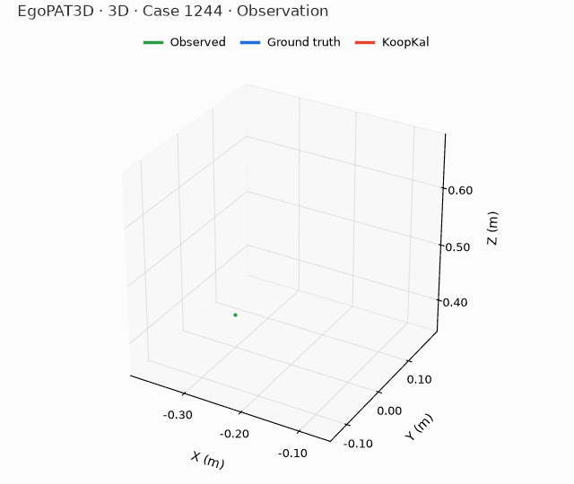
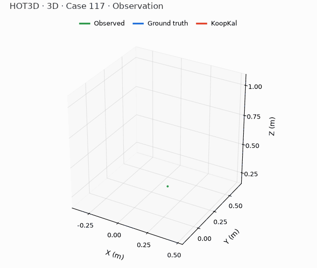
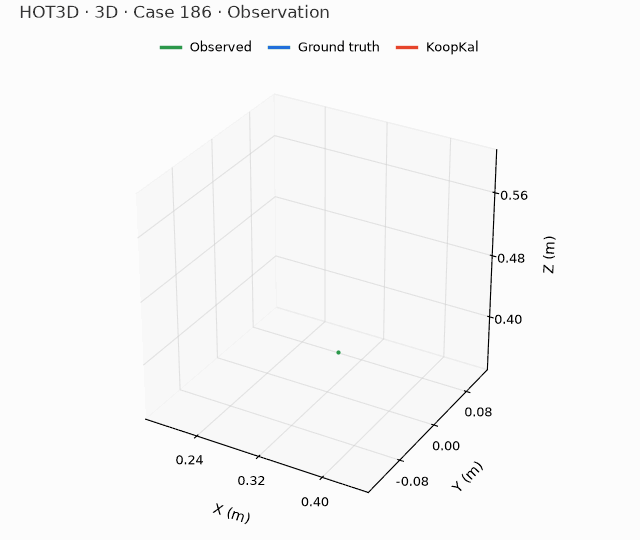
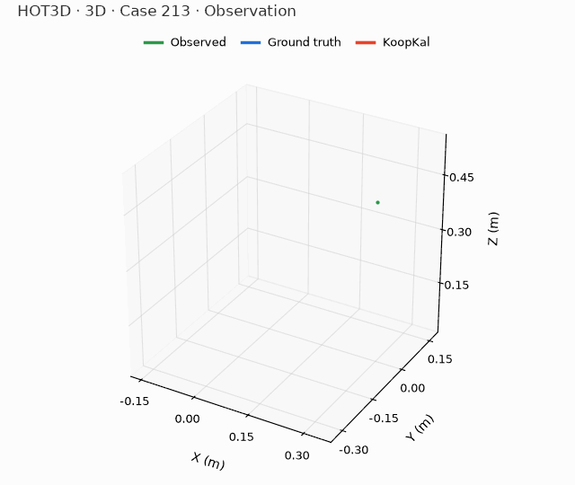
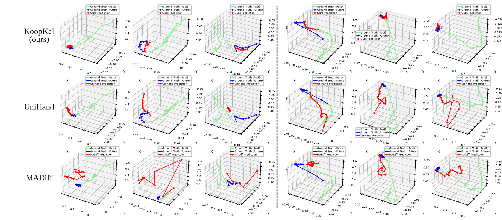
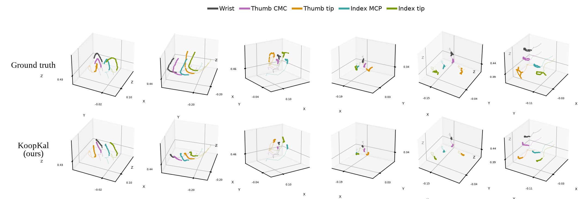